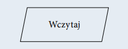
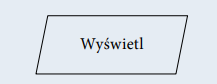
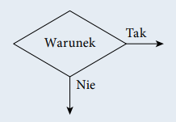
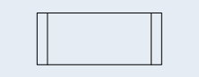
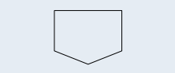

Język programowania służy do tworzenia programów komputerowych, których zadaniem jest przetwarzanie danych, wykonywanie obliczeń i algorytmów. Może zawierać konstrukcje składniowe do manipulowania strukturami danych i zarządzania przepływem sterowania. Niektóre języki programowania mają specyfikację swojej składni i semantyki, inne zdefiniowane są jedynie przez oficjalne implementacje.
Elementy języka:- Składnia — zbiór reguł opisujących sposób definiowania struktur danych, rodzaje dostępnych słów kluczowych i symboli oraz zasady, według których symbole mogą być łączone w większe struktury.
- Semantyka — zbiór reguł definiujących znaczenie słów kluczowych i symboli oraz ich funkcji w programie.
- Typy danych — dostępne typy danych, ich właściwości oraz operacje, które mogą być wykonane na wartościach danego typu.
Przykładami używanych obecnie języków programowania są: C, C++, C#, Java, PHP, Perl, Python, Ruby. Niektóre z tych języków wywodzą się z języka C, na przykład C++ czy C#. Języki Java i Python są popularne, gdyż pozwalają na bardzo szybkie tworzenie aplikacji. Wydajniejsze języki, takie jak C czy C++, posłużyły do napisania programów biurowych typu edytory tekstu czy edytory grafiki. Języki PHP i Java są popularne w aplikacjach internetowych. Python bywa wykorzystywany w administrowaniu systemami i do tworzenia aplikacji. Wybór języka programowania może zależeć od przeznaczenia końcowej aplikacji, indywidualnych upodobań lub strategii firmy tworzącej oprogramowanie. Najlepszym wyjściem jest wybór języka programowania najbardziej dostosowanego do rozwiązywanego zadania i istniejącej infrastruktury. Kod źródłowy programu jest tworzony i zapisywany w formacie tekstowym. Rozszerzenie pliku zależy od wybranego języka programowania. Identyfikuje ono język, w którym program został napisany, na przykład c dla języka C, cpp dla C++, java dla Javy, cs dla C#. Niezależnie od rozszerzenia plik zawierający kod źródłowy programu można otworzyć w dowolnym edytorze tekstu.
Paradygmaty programowania
Paradygmat programowania to pewien wzorzec określający sposób pisania i wykonania programu komputerowego. Języki programowania korzystają z różnych paradygmatów. Paradygmaty programowania opisują między innymi programowanie:
- strukturalne
- obiektowe
- funkcyjne
- proceduralne
- uogólnione
Różnice polegają na różnych strukturach programów oraz na różnym podejściu do problemu.
Najbardziej rozpowszechniony jest paradygmat strukturalny (programowanie strukturalne) oraz obiektowy (programowanie zorientowane obiektowo).
W programowaniu strukturalnym następuje dzielenie kodu na bloki (procedury i funkcje). Instrukcje są pobierane ze stosu i są wykonywane z wykorzystaniem pętli i instrukcji warunkowych. W większości języków można programować strukturalnie.
W programowaniu obiektowym programy definiowane są za pomocą obiektów. Program napisany zgodnie z zasadami programowania obiektowego składa się ze zbioru obiektów, które komunikują się między sobą, aby wykonać określone zadania.
W programowaniu proceduralnym program dzielony jest na procedury, czyli fragmenty wykonujące ściśle określone operacje. Procedury nie powinny korzystać ze zmiennych globalnych, lecz wszystkie dane powinny być pobierane i przekazywane jako parametry wywołania.
W programowaniu uogólnionym kod programu powstaje bez wcześniejszej znajomości typów danych, na których będzie pracował. Do języków programowania wykorzystujących uogólnienia należą: C++, Java.
Skryptowe języki programowania
Skrypt to napisany w języku skryptowym program, który jest wykonywany wewnątrz aplikacji. Język skryptowy to język programowania służący do wykonywania wyspecjalizowanych czynności. Języki skryptowe są tworzone z myślą o interakcji z użytkownikiem. Często są wykorzystywane do zadań administracyjnych. Bywają również osadzane w programach w celu zautomatyzowania powtarzających się czynności. Są używane do tworzenia dynamicznych stron internetowych. Stosowane w grach komputerowych służą do sterowania przebiegiem gry. Języki skryptowe mogą być wykorzystywane do pisania zaawansowanych aplikacji, ale najczęściej są używane do szybkiego tworzenia niewielkich skryptów pozwalających na dynamiczne wyświetlanie stron internetowych lub zapamiętywanie i przetwarzanie wprowadzonych danych. Języki skryptowe często stanowią dodatkowe narzędzie różnego rodzaju oprogramowania.
- JavaScript,
- Python,
- PHP,
JavaScript
JavaScript to skryptowy język programowania stosowany do obsługi stron internetowych. Skrypty działają po stronie użytkownika i najczęściej realizują interakcję z użytkownikiem z wykorzystaniem obsługi zdarzeń, tworzą efekty animacji na stronie internetowej, obsługują walidację formularzy. Wszystkie popularne przeglądarki internetowe implementują JavaScript i obsługują opracowany przez W3C jednolity model obiektowy reprezentujący drzewo dokumentu (DOM). Umożliwiają również tworzenie plików cookie, wyświetlanie okien dialogowych, manipulowanie oknami przeglądarki.
Python
Python jest językiem programowania wysokiego poziomu. Wspiera różne paradygmaty programowania. Często jest używany jako język skryptowy. Z wykorzystaniem odpowiedniego frameworka (na przykład Flask, Django) może być stosowany do tworzenia aplikacji internetowych.
PHP
PHP to skryptowy język programowania stosowany w aplikacjach internetowych. Służy do tworzenia skryptów po stronie serwera, ale może być również używany do tworzenia aplikacji z interfejsem graficznym i pisania skryptów wykonywanych z wiersza poleceń.
Proste algorytmy
Algorytm to zestaw ściśle określonych czynności prowadzących do wykonania pewnego zadania. Określa sposób rozwiązania problemu i ma zastosowanie w różnych dziedzinach. Języki programowania to narzędzia, które bardzo dobrze nadają się do zapisu algorytmów. Aby napisać dobry program komputerowy, należy opracować skuteczny algorytm i zdefiniować dla niego odpowiednie struktury danych. Algorytm przetwarzania danych powinien przy takim samym zbiorze danych wejściowych zwracać zawsze taki sam wynik. Ale stanie się tak tylko w dokładnie takich samych warunkach i przy tych samych danych pomocniczych. Zwykle przy projektowaniu algorytmu zakłada się, że dane wejściowe są poprawne, ale bywają algorytmy, które nie tylko przetwarzają dane, lecz również je weryfikują. W rzeczywistości tak jak nie każdy problem można rozwiązać, tak nie każdą metodę rozwiązania problemu można zapisać przy użyciu algorytmu. Aby problem mógł być rozwiązany za pomocą komputera, musi zostać zapisany w postaci algorytmu. Wynika to z tego, że komputer potrafi rozwiązywać tylko problemy, dla których rozwiązanie zostanie zdefiniowane w postaci jednoznacznych kroków, czyli algorytmu. Jeżeli nie można zdefiniować rozwiązania w postaci algorytmu, nie ma możliwości rozwiązania go z wykorzystaniem komputera. Zdefiniowany algorytm może zostać zapisany w wybranym języku programowania. Ale ten sam algorytm może zostać zapisany różnie w zależności od użytego języka programowania. Zapis algorytmu w wybranym języku programowania nazywamy implementacją algorytmu.
Reprezentacja algorytmów
Algorytm opisujący operacje do wykonania może zostać zapisany w różny sposób. Może to być zapis słowny, lista kroków do wykonania, pseudokod, drzewo algorytmu lub schemat blokowy
Schemat blokowy
| Symbol | Opis |
|---|---|
| Początek algorytmu, start programu. Od tego miejsca rozpoczyna się wykonywanie operacji. | |
 |
Koniec algorytmu, zakończenie programu. W tym miejscu następuje zakończenie wykonywania operacji. |
| Połączenie między blokami. Wskazuje kolejność wykonywania operacji. | |
| Wykonanie operacji, blok obliczeniowy. Wewnątrz tego symbolu znajdują się operacje do wykonania. | |
|  | Wprowadzanie danych. Wewnątrz tego symbolu określamy dane wejściowe, które muszą zostać wczytane. |
|  | Wyprowadzanie danych. Wewnątrz tego symbolu określamy dane wyjściowe, które powinny zostać wyprowadzone jako wynik. |
|  | Warunek logiczny, blok decyzyjny. Umożliwia tworzenie rozgałęzień w algorytmie. Jeżeli warunek jest spełniony, to następuje przejście do gałęzi oznaczonej „Tak”, w przeciwnym razie następuje przejście do gałęzi oznaczonej „Nie”. |
|  | Proces wstępnie zdefiniowany. Symbol ten oznacza dołączenie podprogramu. |
| Łącznik. Odwołanie na stronie. Służy do oznaczenia miejsc łączenia schematu, na przykład gdyby linie łączące na schemacie musiały się krzyżować. | |
|  | Łącznik międzystronicowy. Służy do oznaczenia miejsc łączenia schematu, gdy nie mieści się on na jednej stronie. |